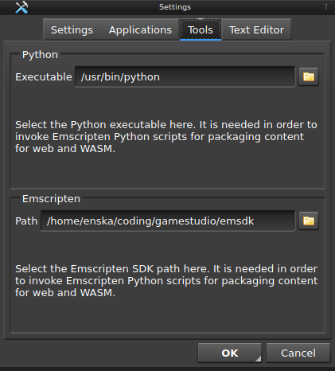
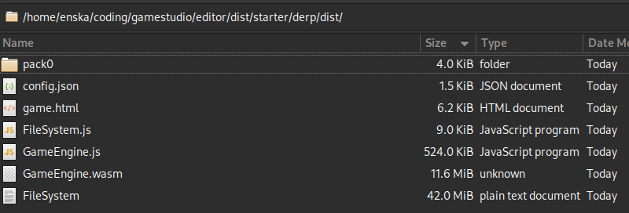

Ensisoft Gamestudio 2D
This is the Gamestudio user guide. Very much work in progress.
If you're looking for developer information on how to build/develop the engine itself
see the README.md instead.
If you're looking for the Gamestudio Lua API documentation it is bundled with the Editor itself and
available in the Script editor.
- Getting Started
- Materials
- Particles
- Entities
- Scenes
- Scripts
- Game User Interfaces
- Audio Graphs
- Custom Shapes
- Working With File Resources
- Packaging Games
Getting Started
todo:
Materials
todo:
Particles
todo:
Entities
todo:
Scenes
todo:
Scripts
todo:
Game User Interfaces
todo:
Audio Graphs
todo:
Custom Shapes
todo:
Working With File Resources
When creating game content it's normal to use resources created in other applications and stored somewhere else on your computer. Examples of these resources are font files (.ttf, .otf), texture files (.png, .bmp, .jpe?g) and shader (.glsl) files. For example you might use some image editor to create your textures or you might have downloaded them from some site such as http://www.opengameart.org. Regardless these files are normally found somewhere on your computer's hard drive.
Unlike some other tools Gamestudio does *not* have an import step that would copy the files into your project tree. Rather it allows you to use these files from wherever they are and Gamestudio only stores the path to these files in its own project files. When the project/workspace content is packaged the resources are all gathered and packaged and then finally copied into the designated output folder.
What does this mean to you?
- If you're only working on your game yourself on a single machine you can place your game resources wherever you wish and any time you update your resource files the changes are reflected in your game project without any need to "reimport". (Just reload your textures and/or shaders).
- However if you want to be able to share your game project with other people you must store your resource files in a location that is universally available on every single machine.
The simplest way is to place your resource files under your workspace directory. For example:
c:\mygame\textures\player\texture0.png
c:\mygame\textures\player\texture1.png
...
c:\mygame\content.json
c:\mygame\workspace.json
When a resource that is stored under the workspace is added to the project/workspace the path is always stored relative
to the workspace itself. This makes the whole workspace self contained and portable across machines. Essentially this means
that you can take the whole project folder, copy it, move it, zip it up etc. and move it somewhere else and the project will
continue to work as-is.
You can also put your whole game project directory into some version control tool such as Git but that is totally up to you.
Packaging Games
Packaging is the process of combining your game's content and other related assets into a redistributable package/file bundle that other people can run either on their computers or in their web browser.
Packaging For Native
todo:
Packaging For HTML5/Web
When packaging for the web Gamestudio can prepare all that you need for you. This means copying and outputting all the right .wasm and .js files that the engine, your game and your game data needs in order to run in the browser. Unfortunately before this can work some additional configuration steps must be taken.
1. Install Emscripten
Unfortunately this a manual process as of now. Please see Emscripten Getting Started on how to install Esmcripten. The goal is to be able to automate this but for now that is not possible.
2. Configure Gamestudio Editor
In Gamestudio Editor open Tools|Settings. Click on the Tools tab.
First select your Python executable.
If you're using Linux this is likely to be /usr/bin/python
If you're using Windows then you have multiple options.
- Use Python from system installation (if any).
- Use Python from Emscripten SDK. For example C:\emsdk\python\3.9.2-1_64bit\python.exe
- Use Python bundled with Gamestudio. (This is the default)
Secondly select your Emscripten SDK installation folder. (See above for how to install Emscripten). This path should point to the top level emsdk folder. So for example if your emsdk is installed C:\emsdk then you should should have C:\emsdk here as well.
Packaging For HTML5/Web
Once you've completed the pre-requisite steps to installe Emscripten SDK and Python it's possible to package
the game project for the web. In Gamestudio Editor open Workspace | Package
In order to package for the web make sure to select the following options:
* Write game config.json file
* Deploy wasm/js game engine files
* Generate game.html main file
* Generate web game content file system image
After the packaging is done you should have all the files that are needed to run the game in the browser in the designed output folder. game.html will be the main html5 file that your browser should then be loading. If will contain links to load the game engine JavaScript and also the filesystem JavaScript files.
The contents of pack0 and config.json are included in FILESYSTEM data file and can be deleted. When deploying to a webserver the important files to copy are: game.html, FILESYSTEM.js, FILESYSTEM, GameEngine.js and GameEngine.wasm
A useful hint for running locally is to use python's HTTP server to serve the web content. Simply open a terminal in the output folder and run the following command python -m http.server then use your web browser to navigate to http://localhost:8000/game.html
The technology behind the web support is Emscripten.